Pista 1 Grabar de la radio
Prende el radio y oprime REC justo cuando la cuenta llegue a cero, antes de que el locutor vuelva a hablar encima.
Casete virgen de 90 minutos listo.
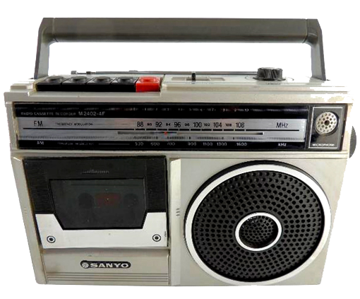
Pon el celular de lado y sube el volumen. Aunque tu pantalla no gire sola, la invitación se acomoda.
¡Así quedó perfecto!
Esta invitación tiene sonido. Dale a Continuar cuando estés listo.
🔇 Toca aquí para oír
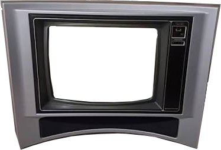
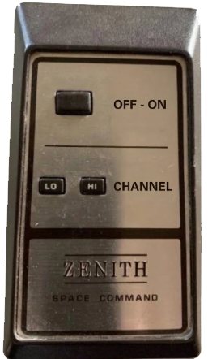
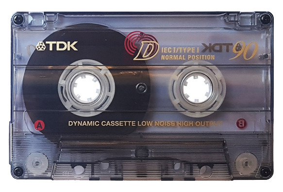
Una mezcla grabada a mano con 40 años de recuerdos y una invitación al final.
Prende el radio y oprime REC justo cuando la cuenta llegue a cero, antes de que el locutor vuelva a hablar encima.

Estaban en todas las esquinas de Bogotá, firmes bajo la lluvia, esperándonos.
No tenían pantalla ni contactos guardados. No hacían falta: los números nos los sabíamos de memoria. El de la casa, el del mejor amigo, el de la niña que nos gustaba y que marcábamos con el corazón en la garganta, rogando que no contestara el papá.
Una moneda pequeña y fría, apretada en la mano todo el camino hasta la esquina, como si fuera un tesoro. Porque lo era: valía tres minutos de mundo.
Y si hoy pudiera echar una moneda y llamar al pasado diría una sola cosa antes de que se corte la línea:
“Tranquilo, amig@. Lo mejor está por venir.”
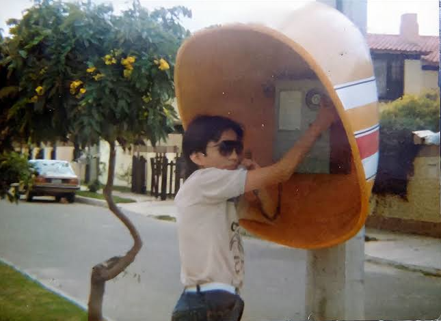
¿A quién llamarías hoy desde este teléfono?
Si usted jugó alguno de estos juegos, toca decirle la verdad: la cédula ya pesa más de lo normal.
Pero tranquilo, también significa que tuvo una infancia brutal llena de amigos y trasnochadas.
👉 Mira todos los juegos del carrete para descubrir la siguiente pista.
¿Cuál faltó en esta lista de juegos legendarios?
Antes de chatear había que conectarse a internet... y rogar que nadie levantara el teléfono de la casa.
👉 Toca «Conectar a internet» en la ventanita para entrar al chat.
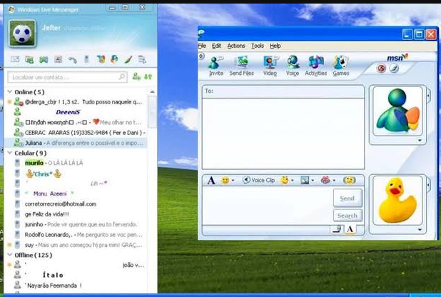
Su equipo no está conectado a Internet.
160 caracteres por mensaje y el saldo contado. Para avisar que llegaste, mejor botar una perdida.
👉 Toca «Botar una perdida» para seguir.
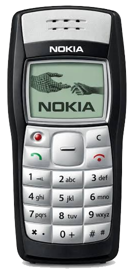
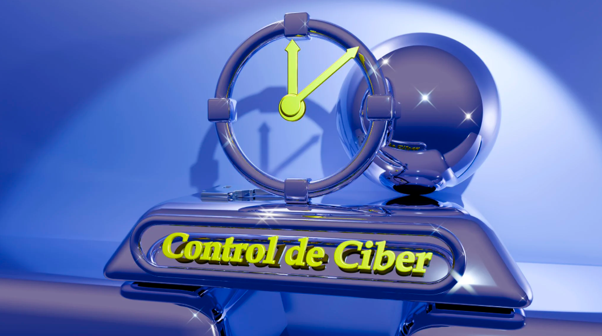
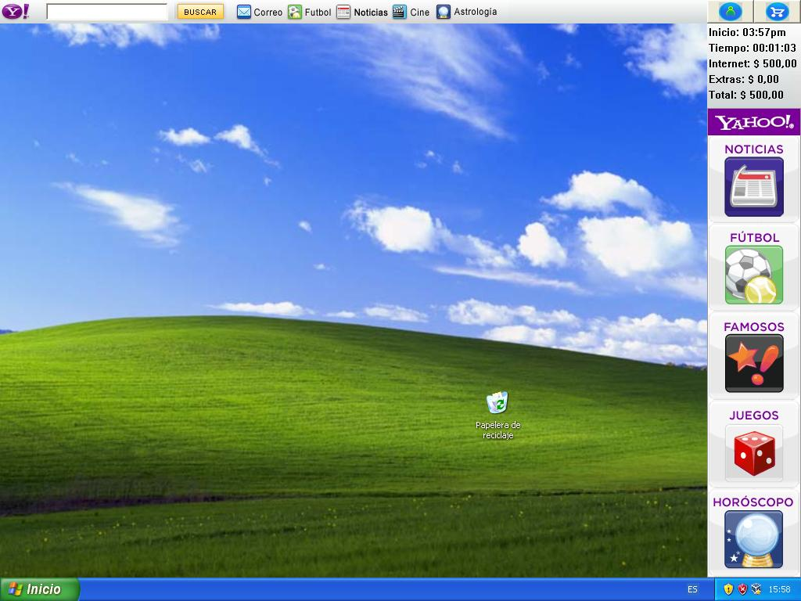
👉 Pide un computador: toca «Sin usar» en la línea 3 del control del ciber.
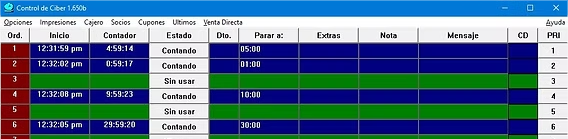
Antes las fotos se veían días después, al recogerlas en el laboratorio. Elige fotos tuyas de esa época y míralas como se veían en el negativo del rollo. Solo se ven en tu pantalla, no se suben a ningún lado.
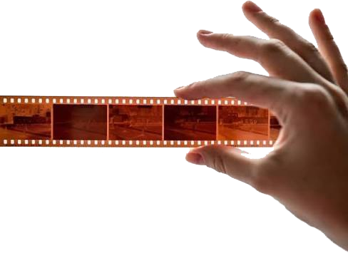
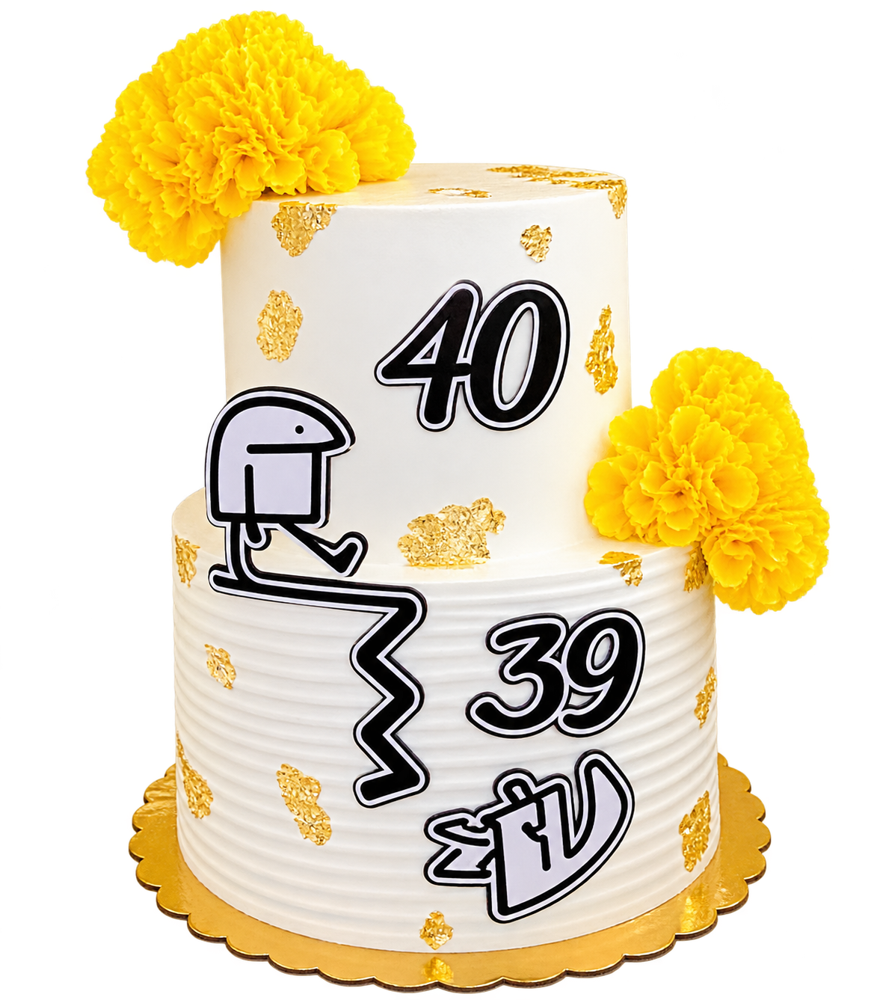